[9-5] 串口收发HEX数据包与文本数据包 — 学习笔记
- 课程：江协科技《STM32入门教程-2023版 细致讲解 中文字幕》
- 视频：BV1th411z7sn?p=29，26:27（1587 秒）
- 素材：227 帧关键帧（每 7 秒，宽 1280px）+ PP-OCRv4 画面硬字幕 OCR（440 段）；关键截图 16 张随笔记收录（源图在
vidsum_out/stm32_p29/frames/，站内图片在assets/images/stm32-29/） - 字幕情况：该集 B 站没有 CC/AI 字幕，文本由画面烧录的中文字幕 OCR 得到（source=subtitle-ocr）；字幕里混入了大量 Keil Build Output（
compiling ...、linking...、"..\Objects\Project.axf" - 0 Error(s)、fatal error in include chain…、Flash Load finished at ...）与录像界面噪声，这些不是老师口述内容，已剔除，错字已按画面校正（清单见文末「存疑」）。 - 本集定位：这是模块 9 的代码课（数据包实战），把 P28 讲的数据包理论真正写成代码——程序一
9-3 串口收发HEX数据包（复制 P27 的 9-2 工程改）、程序二9-4 串口收发文本数据包（复制 9-3 改）。片尾 26:20「本小节内容到这里就结束了」，没有下集预告。本集仍没有校验和/CRC、没有长度字段（协议格式同 P28：HEX 包0xFF+4 字节+0xFE；文本包@+指令+\r\n）。
一句话结论
程序一 9-3 串口收发HEX数据包 由 P27 的 9-2 工程复制改名：在 Serial.c 里加两个缓存数组 uint8_t Serial_TxPacket[4]; 和 uint8_t Serial_RxPacket[4];（Serial_RxFlag 沿用）；发送写好封装 Serial_SendPacket()——Serial_SendByte(0xFF) 发包头 → Serial_SendArray(Serial_TxPacket, 4) 发 4 字节载荷 → Serial_SendByte(0xFE) 发包尾；接收用状态机写在 USART1_IRQHandler 里：static uint8_t RxState = 0;（静态变量，只初始化一次、函数退出后仍保留，作用域仅本函数，类似全局变量）当状态变量，再用 static uint8_t pRxPacket = 0; 记录收到第几个数据；三状态用 if (RxState == 0) … else if (RxState == 1) … else if (RxState == 2) —— 必须用 else if（或 switch-case），因为并列的 if 在状态转移后会立刻再满足下一个条件、一次中断连续命中：S=0 等包头（RxData == 0xFF → RxState = 1）、S=1 收数据（Serial_RxPacket[pRxPacket] = RxData; pRxPacket ++;，收满 pRxPacket >= 4 → RxState = 2）、S=2 等包尾（RxData == 0xFE → RxState = 0; pRxPacket = 0; Serial_RxFlag = 1;）；中断末尾照旧 USART_ClearITPendingBit(USART1, USART_IT_RXNE)。main 里用 PB1 按键（Key_GetNum() == 1）触发：先把 TxPacket 四个字节各加一，再调 Serial_SendPacket()（这样每按一次发一包、数据在变），OLED 上两行 TxPacket/RxPacket 显示；收到包时用 Serial_GetRxFlag() 判断、显示 Serial_RxPacket 的 4 个字节。现象：串口助手（HEX 模式）每次按键收到 FF xx xx xx xx FE；往 STM32 发 FF 66 88 AB CD FE → OLED 显示 66 88 AB CD；发 FE FF 88 FE（载荷里含 FF/FE）也不受影响——因为收载荷时根本不判断包头包尾。程序二 9-4 串口收发文本数据包 由 9-3 复制：删掉按键与发送部分，接收缓存改成 char Serial_RxPacket[100];（防溢出，单条指令不超过 100 字符；发送在主函数里用 Serial_SendString/printf 即可）；状态机按文本包格式改：S=0 等 '@'（RxState = 1; pRxPacket = 0;）、S=1 收数据兼等包尾——if (RxData == '\r') { RxState = 2; } else { Serial_RxPacket[pRxPacket] = RxData; pRxPacket ++; }（可变包长，收数据的同时监视包尾，\r 不存进载荷）、S=2 等 '\n'（RxState = 0; Serial_RxFlag = 1; 并给字符串补 '\0' 作结束符）；main 里 if (Serial_GetRxFlag() == 1) 后先用 16 个空格把第 4 行擦干净再显示收到的字符串，然后 #include <string.h> + strcmp(Serial_RxPacket, "LED_ON") == 0（相等返回 0）判指令：LED_ON → LED1_ON() + 回传 LED_ON_OK；LED_OFF → LED1_OFF() + 回传 LED_OFF_OK；其它 → 回传 ERROR_COMMAND。现象：发 @LED_ON → LED 亮、回传 LED_ON_OK；@LED_OFF → 灭、回传 LED_OFF_OK；乱指令 → ERROR_COMMAND。最后讲了两个坑：坑①（只讲没改代码）：RxPacket 在中断里写、主循环里读，读太慢会读到「一半上一包 + 一半下一包」——要么处理完一包再收下一包，要么数据连续（陀螺仪 XYZ、温湿度）就无所谓；坑②（有落地修改）：连续发包处理不及时会错位——在 S=0 的包头判断上加 && Serial_RxFlag == 0 作闸门（上一包没被读走就不接新包），并取消 Serial_GetRxFlag 里的「读后自动清零」，改成主循环处理完再手动清 Serial_RxFlag，让写数据与读数据严格分开（代价是发太快会丢包，还可以再加指令队列排队）。
0. 本集定位：代码课（两个程序），无下集预告
- 本集是纯代码课：00:00 看接线图 → 面包板接线 → 复制 9-2 工程改名
9-3 串口收发HEX数据包→ 写Serial_SendPacket+ 中断状态机 → 编译下载看现象 → 17:30 复制 9-3 改9-4 串口收发文本数据包→ 文本状态机 +strcmp+ LED → 现象 → 最后讲两个坑。 - 两个程序：① HEX 数据包（PB1 按键控制发送）；② 文本数据包（PA1 LED 指示 + 指令交互）。
- 本集不涉及：校验和/CRC、长度字段（协议格式沿用 P28，只靠包头包尾 + 固定长度界定）、DMA 串口收发。
- 片尾 26:20「本小节内容到这里就结束了」，没有下一集预告。
- 理论引用 P28 即可：HEX/文本数据包格式、状态机设计方法，详见
notes/stm32-28-USART串口数据包.md。
1. 接线与工程准备
- 串口模块接线和之前一模一样（跳线帽 VCC-3V3、RXD→PA9、TXD→PA10、GND 共地）；
- 程序①（HEX 包）：在 PB1 接一个按键，用于控制发送；
- 程序②（文本包）：在 PA1 接一个 LED 用于指示——长脚接正极、短脚接 PA1；
- 面包板接线：串口模块 → RXD 接 PA9、TXD 接 PA10；PB1 插按键；PA1 插 LED；
- 复制 9-2 工程，改名
9-3 串口收发HEX数据包；先编译一下（后面写代码时有提示框会好用一些）。
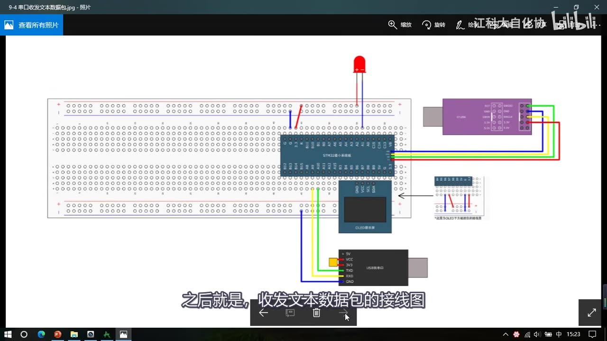
图 1：接线图 9-4 串口收发文本数据包——串口模块（红绿蓝黄线接到 STM32 的 PA9/PA10）、STM32 最小系统板、OLED，以及上方*接在 PA1 的红色 LED（长脚接正极、短脚接 PA1）；字幕「之后就是，收发文本数据包的接线图」*
2. 程序一：HEX 数据包收发
2.1 定义缓存数组、清理旧代码
#include "stm32f10x.h"
#include <stdio.h>
#include <stdarg.h>
uint8_t Serial_TxPacket[4]; /* 发送缓存：4 字节载荷 */
uint8_t Serial_RxPacket[4]; /* 接收缓存：4 字节载荷 */
uint8_t Serial_RxFlag; /* 收到一包的标志（沿用 9-2） */
- 两个缓存数组：
uint8_t Serial_TxPacket[4];、uint8_t Serial_RxPacket[4];——个数都是 4（和 P28 定的「固定 4 字节载荷」对应）； Serial_RxFlag沿用：收到一个数据包时就置 RxFlag；- 初始化的代码都不需要更改（P27 的
Serial_Init直接可用）； - 删掉
Serial_GetRxData函数（数据包不再是一个字节，改由数组承载），并把中断函数里的旧内容删掉（重写成状态机）。
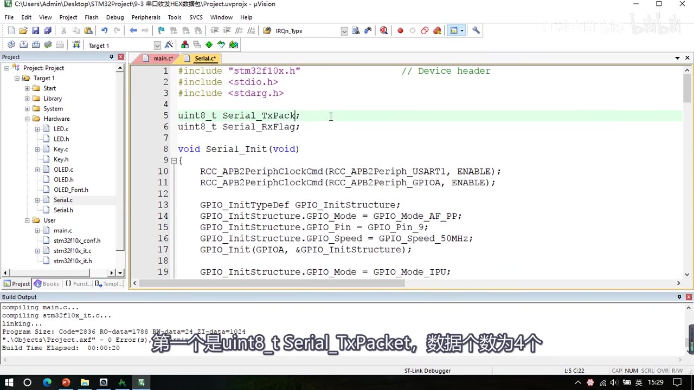
图 2：Serial.c 开头——#include "stm32f10x.h"、<stdio.h>、<stdarg.h>；正在输入 uint8_t Serial_TxPack（即 Serial_TxPacket 的 4 号元素;），下方已有 uint8_t Serial_RxFlag;`；字幕「第一个是uint8_t Serial_TxPacket，数据个数为4个」
2.2 Serial_SendPacket：拼包头包尾
void Serial_SendPacket(void)
{
Serial_SendByte(0xFF); /* 包头 */
Serial_SendArray(Serial_TxPacket, 4); /* 4 字节载荷 */
Serial_SendByte(0xFE); /* 包尾 */
}
- 效果：调用一下这个函数，TxPacket 数组的 4 个数据就会自动加上包头包尾发送出去；
- 头文件里：
Serial_TxPacket[4]/Serial_RxPacket[4]直接extern声明（作者习惯——模块里有数组要外部调用时就直接声明出去；也可以用 Set/Get 函数封装，但那样要用指针传递，作者觉得麻烦），同时声明Serial_SendPacket、Serial_GetRxFlag，删掉Serial_GetRxData。
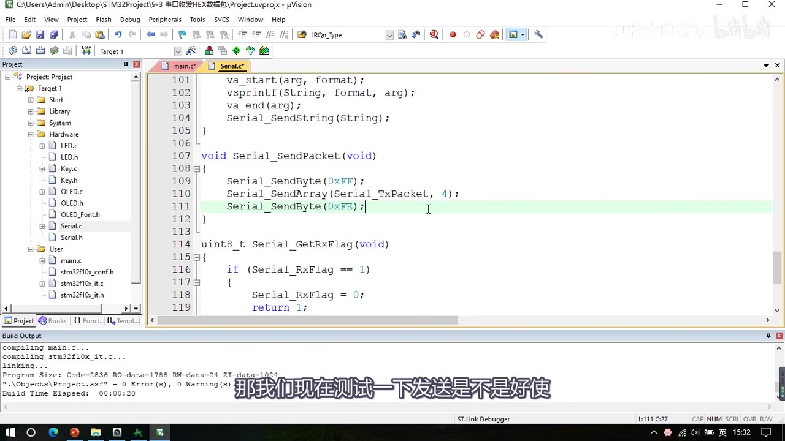
图 3：Serial.c 里的 void Serial_SendPacket(void)——Serial_SendByte(0xFF);、Serial_SendArray(Serial_TxPacket, 4);、Serial_SendByte(0xFE);（最后一行高亮），下方是 uint8_t Serial_GetRxFlag(void) 的开头；字幕「那我们现在测试一下发送是不是好使」
2.3 中断里的接收状态机
void USART1_IRQHandler(void)
{
static uint8_t RxState = 0; /* 状态变量：0 等包头、1 收数据、2 等包尾 */
static uint8_t pRxPacket = 0; /* 表示当前收到第几个数据，最初为 0 */
if (USART_GetITStatus(USART1, USART_IT_RXNE) == SET)
{
uint8_t RxData = USART_ReceiveData(USART1);
if (RxState == 0) /* 状态 0：等待包头 */
{
if (RxData == 0xFF)
{
RxState = 1;
}
}
else if (RxState == 1) /* 状态 1：接收数据 */
{
Serial_RxPacket[pRxPacket] = RxData;
pRxPacket ++;
if (pRxPacket >= 4)
{
RxState = 2;
}
}
else if (RxState == 2) /* 状态 2：等待包尾 */
{
if (RxData == 0xFE)
{
RxState = 0;
pRxPacket = 0; /* 清零，为下次接收做准备 */
Serial_RxFlag = 1;
}
}
USART_ClearITPendingBit(USART1, USART_IT_RXNE);
}
}
- 状态变量用
static：static uint8_t RxState = 0;——静态变量只初始化一次，函数退出后变量仍然有效（下次进中断还能记得上次的状态），作用域只在这个函数里，「类似于全局变量」；用RxState当 P28 状态机图里的 S； pRxPacket记录收到第几个：初始为 0，每收一个数据就++；- 必须用
else if（或switch-case）：如果写成三个并列的if，在状态转移之后会立刻再满足下一个条件——比如RxState刚在第一个if里被置 1，紧接着第二个if (RxState == 1)就也成立，一次中断里连续进了两个状态，逻辑就错了； - S=2 里收到非
0xFE就不动：仍然留在这个状态等包尾——这样即使载荷里有 FF/FE，也不会因为收载荷时的判断而错位（收载荷时根本不判断包头包尾，只在收包头/包尾时判断）； - 中断末尾
USART_ClearITPendingBit(USART1, USART_IT_RXNE);清挂起位。
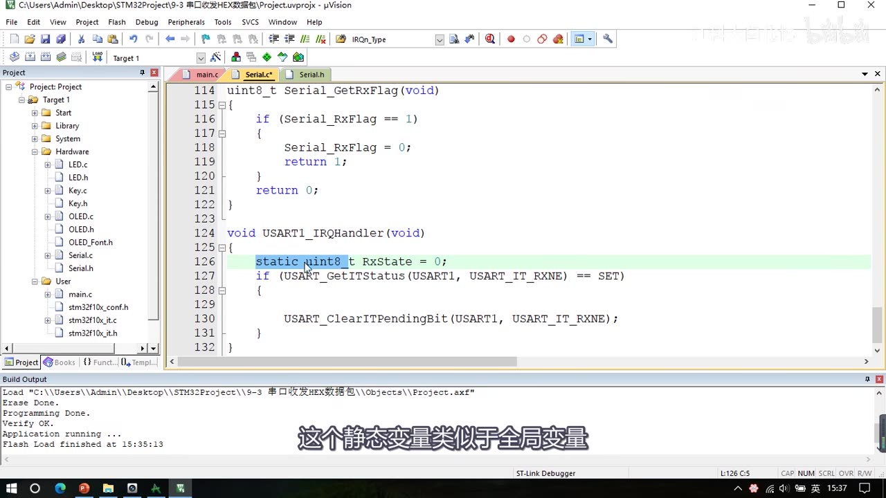
*图 4：Serial_GetRxFlag 尾部与中断骨架——void USART1_IRQHandler(void) 开头写了 static uint8_t RxState = 0;（高亮），if (USART_GetITStatus(USART1, USART_IT_RXNE) == SET) 里暂时只有 USART_ClearITPendingBit(...)；字幕「这个静态变量类似于全局变量」*
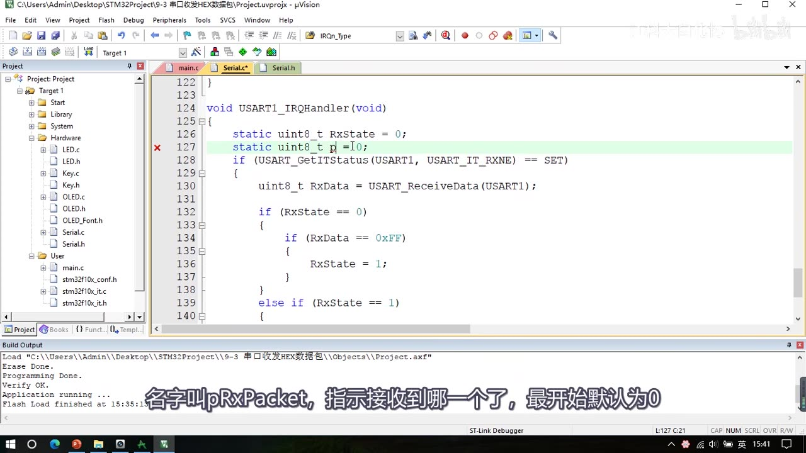
图 5：中断里 S=0 与 S=1 的开头——static uint8_t RxState = 0;、正在输入 static uint8_t pRxPacket = 0;（高亮，行标红）、uint8_t RxData = USART_ReceiveData(USART1);，if (RxState == 0) { if (RxData == 0xFF) { RxState = 1; } } else if (RxState == 1) {；字幕「名字叫pRxPacket，指示接收到哪一个了，最开始默认为0」
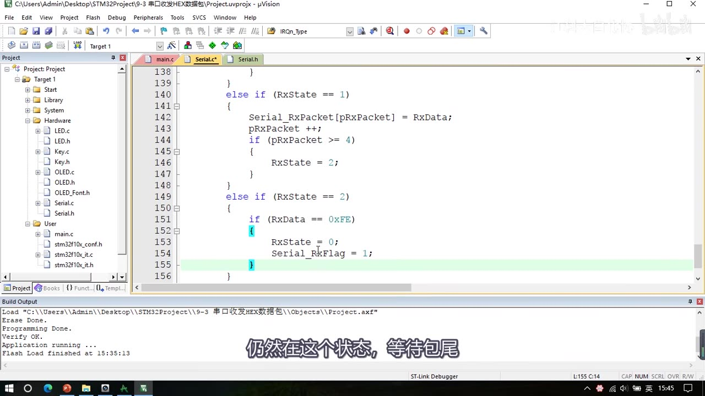
图 6：S=1 与 S=2 的完整代码——Serial_RxPacket 的 pRxPacket 号元素 = RxData;、pRxPacket ++;、if (pRxPacket >= 4) { RxState = 2; }；else if (RxState == 2) { if (RxData == 0xFE) { RxState = 0; Serial_RxFlag = 1; } }（Serial_RxFlag = 1;` 一行高亮）；字幕「仍然在这个状态，等待包尾」
2.4 先测发送，再测接收
- 发送测试：先在初始化之后把
Serial_TxPacket填成0x01 0x02 0x03 0x04，调用Serial_SendPacket()；串口助手（发送/接收都选 HEX 模式）收到FF 01 02 03 04 FE——「实际上就是 SendArray 加了包头包尾」； - 接收测试：串口助手发送区发
FF 11 22 33 44 FE→ OLED 显示11 22 33 44； - 特殊测试：发
FE FF 88 FE（载荷里含 FF/FE）也不受影响——因为状态机收载荷时不做包头包尾判断，只在收包头/包尾时判断。
2.5 主函数：PB1 按键触发发送
#include "stm32f10x.h"
#include "Delay.h"
#include "OLED.h"
#include "Serial.h"
#include "Key.h"
uint8_t KeyNum;
int main(void)
{
OLED_Init();
Key_Init();
Serial_Init();
OLED_ShowString(1, 1, "TxPacket");
OLED_ShowString(3, 1, "RxPacket");
Serial_TxPacket[0] = 0x01;
Serial_TxPacket[1] = 0x02;
Serial_TxPacket[2] = 0x03;
Serial_TxPacket[3] = 0x04;
while (1)
{
KeyNum = Key_GetNum();
if (KeyNum == 1)
{
Serial_TxPacket[0] ++;
Serial_TxPacket[1] ++;
Serial_TxPacket[2] ++;
Serial_TxPacket[3] ++;
Serial_SendPacket();
}
if (Serial_GetRxFlag() == 1)
{
OLED_ShowHexNum(2, 1, Serial_RxPacket[0], 2);
OLED_ShowHexNum(2, 4, Serial_RxPacket[1], 2);
OLED_ShowHexNum(2, 7, Serial_RxPacket[2], 2);
OLED_ShowHexNum(2, 10, Serial_RxPacket[3], 2);
}
}
}
- 发送：每次按 PB1（
Key_GetNum() == 1）先把 TxPacket 四个字节各加一，再调Serial_SendPacket()——数据每发一次就变化，这样能直观看出每包都是新的（早期中间态是「初始化时固定赋 01～04、只发一次」，最终版改成按键时自增）； - 接收：
if (Serial_GetRxFlag() == 1)后把Serial_RxPacket的 4 个字节显示在 第 2 行（RxPacket标题在第 3 行）； - 现象：串口助手 HEX 模式每次按键收到
FF xx xx xx xx FE（数据递增）；向 STM32 发FF 05 06 07 08 FE→ OLED 显示05 06 07 08；手打FE FF 88 FE这类含包头值的载荷也不出错。
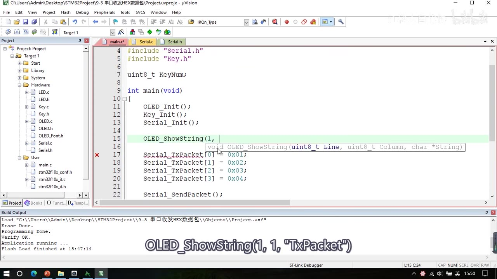
图 7：main 中间态——OLED_Init(); Key_Init(); Serial_Init();、正在输入 OLED_ShowString(1, …)、Serial_TxPacket 的 0 号元素 = 0x01; … （3） = 0x04;与Serial_SendPacket();`；字幕「OLED_ShowString(1, 1, "TxPacket")」
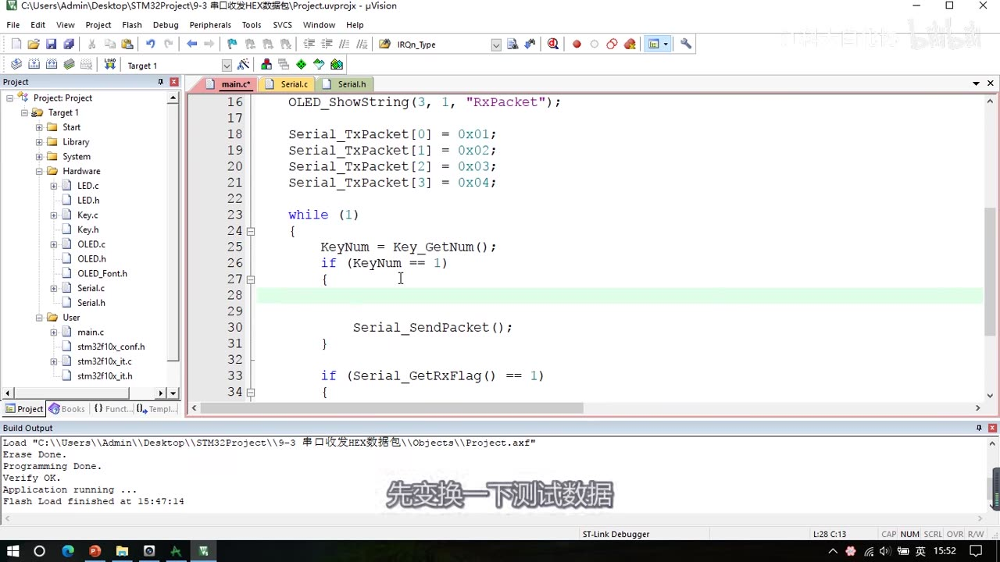
图 8：main 最终版——OLED_ShowString(3, 1, "RxPacket");、TxPacket 初值 01～04，while (1) { KeyNum = Key_GetNum(); if (KeyNum == 1) { … Serial_SendPacket(); } if (Serial_GetRxFlag() == 1) { …；字幕「先变换一下测试数据」
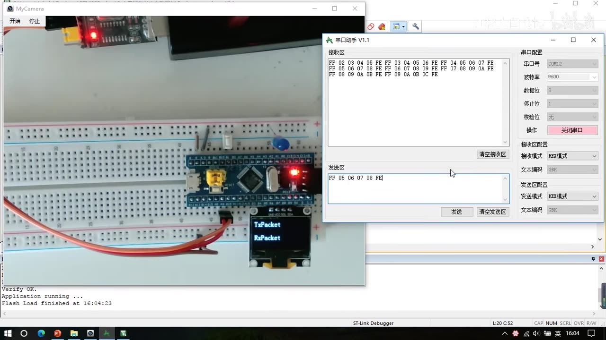
图 9：程序一现象——串口助手接收区收到多包（FF 02 03 04 05 FE、FF 05 06 07 08 FE …），发送区手写了 FF 05 06 07 08 FE；OLED 显示 TxPacket/RxPacket；面包板上 PB1 是蓝色按键
2.6 坑①：接收缓存的读写冲突（只讲未改代码）
- RxPacket 在中断里被写、在主循环里被读；如果主循环读得太慢（比如还在处理上一包），中断里已经把同一个数组写成下一包的前半部分——结果就会显示**「一半是上一包、一半是下一包」**的错位数据；
- 解决思路：处理完一包再接收下一包（例如加标志位做闸门、或把收到的数据先转存到另一个缓冲区再处理）；
- 但这也不是必须的：如果数据本身是连续不断发的（像陀螺仪 XYZ、温湿度传感器），那错位就错位，无所谓——所以要根据实际需求决定；
- 本集对坑①只讲了思路、没有落地代码（与后面坑②不同）。
3. 程序二：文本数据包收发
3.1 复制工程、改接收缓存
- 复制 9-3 工程，改名
9-4 串口收发文本数据包； - 删掉按键相关和发送部分（文本包发送很简单，主函数里用
Serial_SendString/printf就行）； - 接收缓存改成
char Serial_RxPacket[100];——字符数组，长度给 100 是为了防止溢出（单条指令一般不超过 100 个字符；也可以用宏定义）； - 文本包的格式同 P28：
@包头 + 指令字符串 +\r\n包尾。
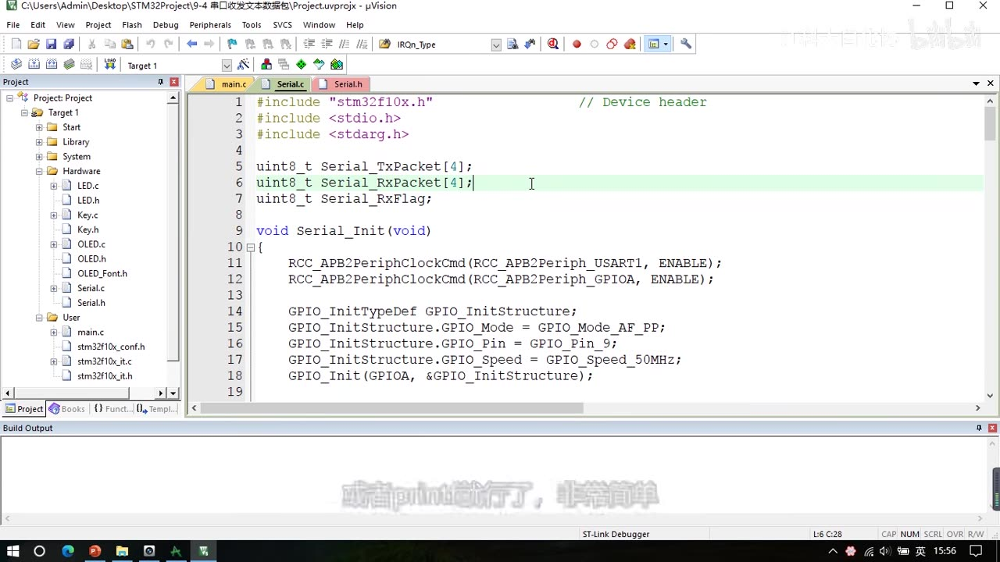
图 10：程序二 Serial.c 开头（工程 9-4 串口收发文本数据包）——uint8_t Serial_TxPacket（4）;、uint8_t Serial_RxPacket（4）;（第 6 行正在修改，将改成 char Serial_RxPacket（100）;）、uint8_t Serial_RxFlag;；下方 Serial_Init 不动
3.2 文本包状态机
void USART1_IRQHandler(void)
{
static uint8_t RxState = 0;
static uint8_t pRxPacket = 0;
if (USART_GetITStatus(USART1, USART_IT_RXNE) == SET)
{
uint8_t RxData = USART_ReceiveData(USART1);
if (RxState == 0) /* S=0：等待包头 '@' */
{
if (RxData == '@')
{
RxState = 1;
pRxPacket = 0;
}
}
else if (RxState == 1) /* S=1：接收数据，兼等包尾 '\r' */
{
if (RxData == '\r')
{
RxState = 2;
}
else
{
Serial_RxPacket[pRxPacket] = RxData;
pRxPacket ++;
}
}
else if (RxState == 2) /* S=2：等待包尾 '\n' */
{
if (RxData == '\n')
{
RxState = 0;
Serial_RxPacket[pRxPacket] = '\0'; /* 补字符串结束符 */
Serial_RxFlag = 1;
}
}
USART_ClearITPendingBit(USART1, USART_IT_RXNE);
}
}
- S=0：判断是不是
'@'，是就RxState = 1; pRxPacket = 0;（进入接收状态、计数清零）； - S=1：可变包长，接收数据的同时还要监视包尾——先判断是不是
'\r'：是就不把它存进载荷，直接跳 S=2；不是就正常存进Serial_RxPacket[pRxPacket]、pRxPacket ++； - S=2：判断是不是
'\n'，是就RxState = 0、补'\0'、置Serial_RxFlag = 1；为什么补'\0'：收到的载荷是字符串，后面要用strcmp等字符串函数比较，必须以\0结束； - 注意：这里 S=1 里不能再有
if (pRxPacket >= 4)——那是从 HEX 版复制过来的残留（HEX 包固定 4 字节才需要），文本包是可变包长，靠包尾结束，所以要用else存数据（本集帧里能看到「先残留、后改成 else」的过程，最终代码以改成 else 的为准）。
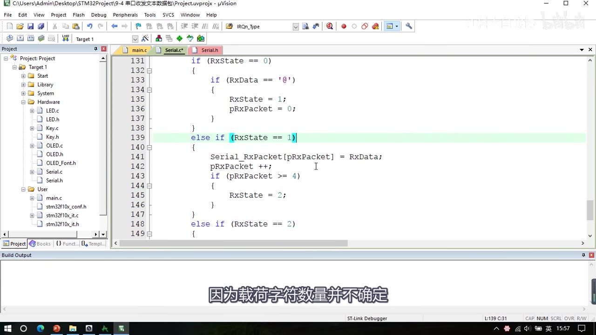
图 11：文本状态机中间态——S=0 里 if (RxData == '@') { RxState = 1; pRxPacket = 0; }，S=1 仍留着 HEX 版的 if (pRxPacket >= 4) { RxState = 2; }（else if (RxState == 1) 一行高亮）；字幕「因为载荷字符数量并不确定」
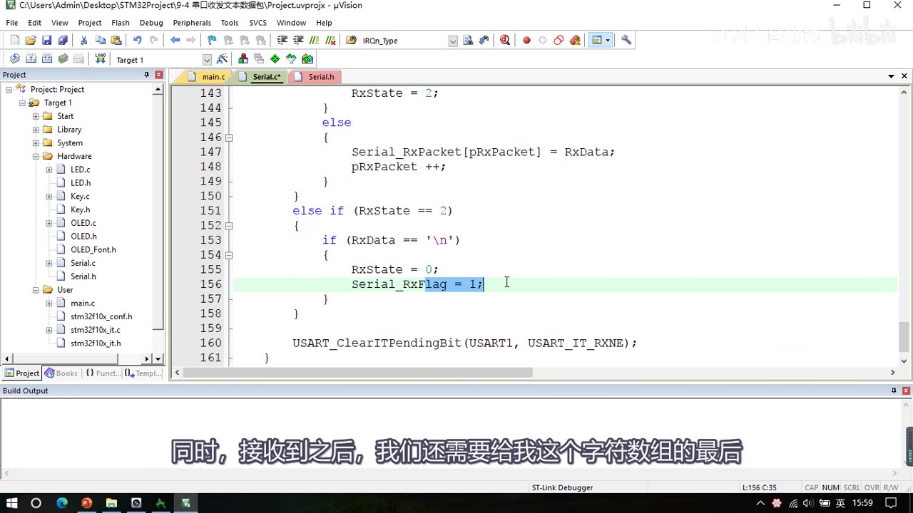
图 12：S=1 改成判断是否收到回车符 \r：是则转 S=2、不存进载荷；否则 else 里把 RxData 存进接收缓存并 pRxPacket 自增；S=2 里判断是否收到换行符 \n，是则 RxState 归 0、Serial_RxFlag 置 1（高亮）；末尾清挂起位
3.3 main：擦除显示 + strcmp 判指令
#include "stm32f10x.h"
#include "Delay.h"
#include "OLED.h"
#include "Serial.h"
#include "LED.h"
#include <string.h>
int main(void)
{
OLED_Init();
LED_Init();
Serial_Init();
OLED_ShowString(1, 1, "TxPacket");
OLED_ShowString(3, 1, "RxPacket");
while (1)
{
if (Serial_GetRxFlag() == 1)
{
/* 先用 16 个空格擦干净第 4 行，再显示新内容 */
OLED_ShowString(4, 1, " ");
OLED_ShowString(4, 1, Serial_RxPacket);
if (strcmp(Serial_RxPacket, "LED_ON") == 0)
{
LED1_ON();
Serial_SendString("LED_ON_OK\r\n");
}
else if (strcmp(Serial_RxPacket, "LED_OFF") == 0)
{
LED1_OFF();
Serial_SendString("LED_OFF_OK\r\n");
}
else
{
Serial_SendString("ERROR_COMMAND\r\n");
}
}
}
}
- 为什么先擦除：上一包字符串可能比新包长，直接用
OLED_ShowString(4, 1, ...)重写会残留旧字符，所以先用 16 个空格（" "）把第 4 行填满再显示； strcmp判指令：#include <string.h>，strcmp(a, b) == 0表示两个字符串完全相等（相等时返回 0）；LED_ON：点灯 + 回传LED_ON_OK\r\n；LED_OFF：灭灯 + 回传LED_OFF_OK\r\n；其它：回传ERROR_COMMAND\r\n；- 回传时带
\r\n是为了在串口助手里一行一行显示。
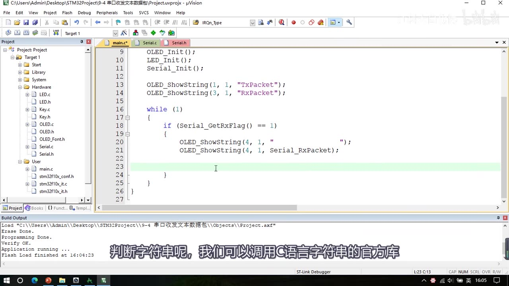
图 13：文本版 main——OLED_Init(); LED_Init(); Serial_Init();、OLED_ShowString(1, 1, "TxPacket")、(3, 1, "RxPacket")，while (1) { if (Serial_GetRxFlag() == 1) { OLED_ShowString(4, 1, " ");（16 个空格）OLED_ShowString(4, 1, Serial_RxPacket); } }；字幕「判断字符串呢，我们可以调用C语言字符串的官方库」
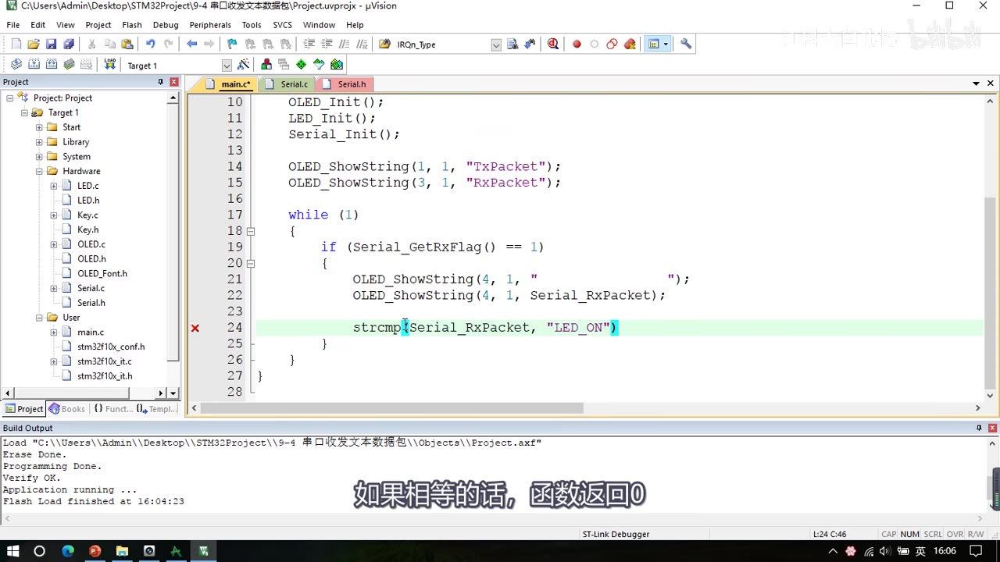
图 14：正在输入 strcmp(Serial_RxPacket, "LED_ON")（第 24 行，高亮），上方是擦除行与新数据显示行；字幕「如果相等的话，函数返回0」
3.4 现象与坑②
- 现象：文本模式发
@LED_ON→ LED 亮、串口助手收到LED_ON_OK；发@LED_OFF→ LED 灭、收到LED_OFF_OK；发乱指令（如@adfasda）→ 回传ERROR_COMMAND。 - 坑②：连续发包处理不及时会错位（
Serial_RxFlag还没被主循环读走，中断又开始收下一包，把Serial_RxPacket覆盖了）；落地修改：- 在 S=0 的包头判断上加闸门：
if (RxData == '@' && Serial_RxFlag == 0)——只有上一包已被读走（RxFlag 为 0）才允许接收新包； - 取消
Serial_GetRxFlag里的「读后自动清零」：改成只判断、不清零； - 主循环处理完再手动清：
if (Serial_GetRxFlag() == 1) { Serial_RxFlag = 0; …处理…}； - 这样写数据（中断）与读数据（主循环）严格分开、不会同时进行，避免错位；
- 在 S=0 的包头判断上加闸门：
- 代价：发送数据包的频率不能太快，否则会丢弃部分包；进一步方案：再定义一个指令缓存区，把收到的字符串放进去排队，处理起来更有条理。
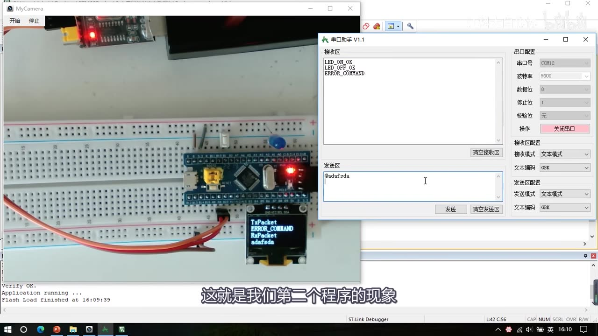
图 15：程序二现象——串口助手接收区依次是 LED_ON_OK、LED_OFF_OK、ERROR_COMMAND，发送区 @adfasda；OLED 显示 TxPacket ERROR_COMMAND 与 RxPacket adfasda；字幕「这就是我们第二个程序的现象」
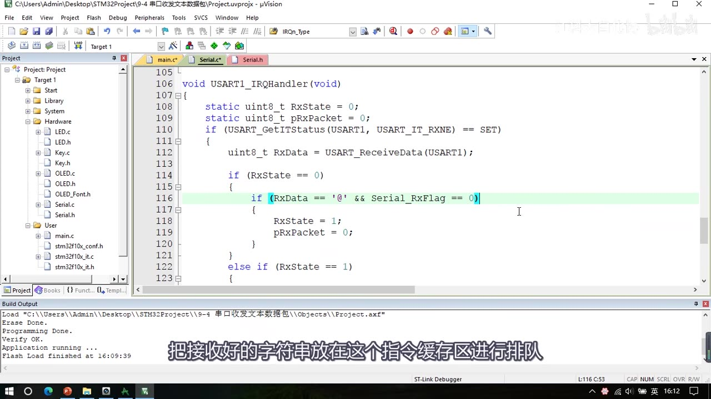
*图 16：坑②的落地修改——中断里 static uint8_t RxState = 0; static uint8_t pRxPacket = 0;，S=0 的判断变成 if (RxData == '@' && Serial_RxFlag == 0)（高亮）→ RxState = 1; pRxPacket = 0;；字幕「把接收好的字符串放在这个指令缓存区进行排队」*
4. 两个程序差异对照
| 项 | 程序一 9-3 串口收发HEX数据包 |
程序二 9-4 串口收发文本数据包 |
|---|---|---|
| 工程来源 | 复制 9-2（P27） | 复制 9-3 |
| 额外硬件 | PB1 按键 | PA1 LED |
| 接收缓存 | uint8_t Serial_RxPacket[4]; |
char Serial_RxPacket[100]; |
| 发送 | Serial_SendPacket()（0xFF + SendArray 4 + 0xFE） |
主函数用 Serial_SendString/printf（回传 xxx_OK\r\n） |
| 包格式 | 0xFF + 固定 4 字节 + 0xFE |
@ + 可变长字符串 + \r\n |
| 状态机 | 3 状态：等包头 / 收 4 字节 / 等包尾 | 3 状态：等 @ / 收数据兼等 \r / 等 \n |
| 结束条件 | pRxPacket >= 4 再等 0xFE |
靠 \r\n 包尾（无长度计数） |
| 数据后处理 | 直接按 HEX 显示 4 字节 | 补 '\0' + strcmp 判指令 |
| 坑②修改 | 未改代码（只讲思路） | S=0 加 && Serial_RxFlag == 0 闸门 + 主循环读后清零 |
坑与易错点
- 状态机必须用
else if或switch-case：三个并列if会在状态转移后立刻命中下一个条件，一次中断跑完多个状态。 - 状态变量必须
static：否则每次进中断都重新初始化为 0，状态机永远停在 S=0。 pRxPacket要在接收新包前清零：HEX 版在 S=2 收尾时清零；文本版在 S=0 收到@时清零——忘了清就会越界写数组。- HEX 包收到数据要先存数组再计数、够 4 个才转 S=2：判断用
>= 4更稳妥。 - 收载荷时不要判断包头包尾：只在收包头/包尾时判断——这是 HEX 包能容忍载荷含
FF/FE的关键。 - 文本包 S=1 里不能残留
if (pRxPacket >= 4)：那是 HEX 版逻辑；文本包可变长，靠\r转状态、靠\n结束。 \r不能存进载荷：它是包尾的一部分，收到就转状态，不写入Serial_RxPacket。- 字符串必须以
'\0'结尾：文本包收完后要手动补'\0'，否则strcmp/printf会越界读。 strcmp相等返回 0：写strcmp(a, b) == 0才是「相等」，别写成== 1。- 回传要带
\r\n：否则串口助手不会换行，多包会粘在一行。 - OLED 重写前要擦行：上一包字符串更长时会残留旧字符——先写 16 个空格再写内容。
- 坑①（读写冲突）与坑②（RxFlag 闸门）不是一回事：坑①本集只讲思路（处理完再收 / 数据连续可不管）；坑②给了代码修改（
&& Serial_RxFlag == 0+ 手动清标志）。 - 坑②取消自动清零后，主循环必须手动清
Serial_RxFlag：否则闸门永远为 1，再也收不到新包。 - 本集协议没有校验和/CRC/长度字段：别自行加；靠包头包尾 + 固定长度界定。
- 发送太快会丢包：坑②的方案是「处理完一包再收下一包」，代价就是高频发送会丢；需要时用指令队列排队。
时间轴
| 时间 | 内容 |
|---|---|
| 0:02 | 开场：本小节来写串口收发数据包的代码 |
| 0:07 | 两个代码的接线图之前都用过，比较简单 |
| 0:13 | 串口模块接线和之前一样，没有变化 |
| 0:17 | 收发 HEX 数据包的接线图在 PB1 接了一个按键 |
| 0:24 | 收发文本数据包的接线图在 PA1 接了一个 LED |
| 0:35 | 把两个代码的接线一起接好 |
| 0:39 | 先接 USB 转串口模块 |
| 0:45 | RXD 接 PA9、TXD 接 PA10，串口接线完成 |
| 0:52 | 在 PB1 口插一个按键 |
| 0:57 | PA1 口插一个 LED，长脚接正、短脚接 PA1 |
| 1:10 | 开始写代码，回工程文件夹 |
| 1:15 | 复制 9-2 的代码，在这个基础上改 |
| 1:19 | 改名 9-3 串口收发HEX数据包 |
| 1:36 | 先编译一下，有代码提示框会好用 |
| 2:01 | 在这个文件里加收发 HEX 数据包的部分 |
| 2:05 | HEX 数据包格式和 PPT 一样：固定包长、含包头包尾 |
| 2:15 | 包头 FF、载荷固定 4 字节、包尾 FE |
| 2:24 | 先定义两个缓存数组 |
| 2:26 | 第一个 uint8_t Serial_TxPacket，数据个数 4 |
| 2:33 | 第二个叫 RxPacket，数据个数也是 4 |
| 2:44 | RxFlag 留着，收到一个数据包就置 RxFlag |
| 2:52 | 初始化代码都不需要更改 |
| 2:58 | GetRxData 这个函数删掉 |
| 3:05 | 中断里的东西先删掉 |
| 3:09 | 先写 SendPacket 函数 |
| 3:22 | 目标：调用一次，TxPacket 的 4 个数据加上包头包尾发出去 |
| 3:32 | 第一步 SendByte 发包头 0xFF |
| 3:39 | 第二步 SendArray，参数 Serial_TxPacket、长度 4 |
| 3:51 | 第三步再 SendByte 发包尾 0xFE |
| 4:02 | 测试发送，函数放头文件声明 |
| 4:15 | GetRxData 没有，删掉 |
| 4:17 | 数组在头文件声明为外部可调用 |
| 4:27 | 数组声明时数量可以不要 |
| 4:30 | 模块里有数组需要外部调用，作者习惯直接声明 |
| 4:35 | 也可以封装 Set/Get，但要用指针，太麻烦 |
| 4:46 | 初始化之后先填充发送缓存区 |
| 4:51 | Serial_TxPacket 赋 0x01～0x04 |
| 5:09 | 调用 Serial_SendPacket |
| 5:19 | SendPacket 取出数组内容、加包头包尾统一发送 |
| 5:36 | 串口助手发送/接收都选 HEX 模式 |
| 5:41 | 数据包发送过来，格式是 FF + 4 个载荷 + FE |
| 5:49 | 实际上就是 SendArray 加包头包尾 |
| 6:06 | 接下来做接收，先看中断函数 |
| 6:17 | 定义 static uint8_t RxState = 0 当状态变量 S |
| 6:31 | static 静态变量：只初始化一次、函数退出后仍有效 |
| 6:43 | 作用域仅本函数，类似全局变量 |
| 6:50 | 根据 RxState 的不同进入不同处理程序 |
| 7:00 | if (RxState == 0) 写状态 0 的代码 |
| 7:07 | 再 else if (RxState == 1)、else if (RxState == 2) |
| 7:14 | 必须用 else if，否则转移后会立刻满足下一个条件 |
| 7:21 | 也可以写成 switch-case |
| 7:30 | 状态 0 的逻辑：等待包头，判断是不是 0xFF |
| 7:41 | 是的话置 RxState = 1 转移到状态 1 |
| 8:39 | 不是的话可以加 else 置 RxState = 0，不写也一样 |
| 9:02 | 定义 static uint8_t pRxPacket = 0 记录收到第几个 |
| 9:06 | 状态 1：接收数据 |
| 9:11 | Serial_RxPacket 第 pRxPacket 个 = RxData |
| 9:23 | 然后 pRxPacket++，移动到下一个位置 |
| 9:36 | 当 pRxPacket >= 4 时，置 RxState = 2 |
| 9:49 | 同时 pRxPacket 清零，为下次接收做准备 |
| 9:55 | 状态 2：等待包尾 |
| 10:24 | 判断是不是 0xFE，是就 RxState = 0 回到初始、RxFlag 置 1 |
| 10:30 | 不是就仍然留在这个状态等包尾 |
| 10:45 | 最后别忘了清中断挂起位 |
| 10:53 | 中断函数写完 |
| 11:40 | 测试接收：串口助手发 FF 11 22 33 44 FE |
| 12:04 | OLED 显示 11 22 33 44 |
| 12:25 | 发 FE FF 88 FE（载荷含 FF/FE）也不受影响 |
| 12:26 | 因为收载荷时不判断包头包尾 |
| 12:33 | 讲第一个坑：RxPacket 读写冲突 |
| 12:37 | 中断里写、主循环里读，读太慢会读到半包旧半包新 |
| 13:20 | 解决：处理完一包再收下一包 |
| 13:33 | 若数据连续（陀螺仪 XYZ）则错位无所谓 |
| 14:00 | 完善实验现象：main 里加按键控制发送 |
| 14:51 | KeyNum = Key_GetNum()，等于 1 时发送 |
| 15:10 | 把 TxPacket 每个字节加一 |
| 15:50 | 现象：按键一次发一包 |
| 16:13 | 程序一内容差不多完成 |
| 16:20 | 开始程序二：复制 9-3 改 9-4 串口收发文本数据包 |
| 16:40 | 删掉按键和发送部分 |
| 17:00 | 接收缓存改成 char Serial_RxPacket[100] 防止溢出 |
| 17:20 | 发送在主函数用 SendString 或 printf 即可 |
| 17:30 | 写文本包状态机 |
| 17:40 | S=0：判断是不是 @，是就 RxState = 1、pRxPacket = 0 |
| 18:00 | S=1：可变包长，接收数据同时监视包尾 |
| 18:05 | 先判断是不是 \r，是就不接收、跳到状态 2 |
| 18:30 | 不是就存数据、pRxPacket++ |
| 18:54 | S=2：判断是不是 \n，是就回状态 0、置 RxFlag |
| 19:05 | 同时还要给字符数组补 \0 作字符串结束 |
| 19:30 | main：OLED、LED、Serial 初始化 |
| 19:40 | 判断 RxFlag 后先擦除第 4 行再显示新字符串 |
| 20:10 | 用 strcmp 判断指令字符串是否相等 |
| 20:30 | LED_ON 就点灯并回传 LED_ON_OK |
| 21:00 | LED_OFF 就灭灯并回传 LED_OFF_OK |
| 21:20 | 其他指令回传 ERROR_COMMAND |
| 21:40 | 编译下载看现象 |
| 22:00 | 发 @LED_ON，LED 亮、回传 LED_ON_OK |
| 22:20 | 发 @LED_OFF，LED 灭、回传 LED_OFF_OK |
| 22:40 | 发乱指令，回传 ERROR_COMMAND |
| 23:57 | 讲坑②：连续发包处理不及时会错位 |
| 24:18 | 并取消 GetRxFlag 的读后自动清零 |
| 24:30 | 解决：S=0 包头判断加 && Serial_RxFlag == 0 闸门 |
| 25:10 | 主循环处理完再手动清 RxFlag |
| 25:20 | 这样写数据和读数据严格分开 |
| 25:27 | 代价：发送频率不能太快 |
| 25:34 | 进一步可以定义指令缓存区排队处理 |
| 25:45 | 数据包收发的细节很多 |
| 25:50 | 试一下修改后的代码，现象和刚才一样 |
| 26:10 | 数据包发送频率低、处理时间足够就没问题 |
| 26:20 | 本小节内容到这里就结束了 |
存疑
- 本集文本来自画面硬字幕的 OCR（PP-OCRv4，source=subtitle-ocr，440 段），不是 ASR。直接进入字幕文本的 Keil/录像内容很少（只有
"..\Objects\Project.axf" - 0 Error(s)与Application running ...；compiling、linking、fatal error、Flash Load finished、Build Time等只出现在画面 Keil 面板里、未进入 OCR），这些不是老师口述内容；典型 OCR 错字（本集实际出现）：串口→ 「串回/事口」、LED_ON→ 「LEDON」（缺下划线）、Serial_SendByte等下划线漏识别，已按画面校正。 - 两个工程名都有帧证据：
9-3 串口收发HEX数据包、9-4 串口收发文本数据包。 - 文本状态机 S=1 里的
if (pRxPacket >= 4)是 HEX 版残留：f_00156（约 18:05）还保留着，f_00163（约 18:54）已改成else存数据——本笔记按改后的最终代码写，过程见 3.2 与图 11/图 12。 - 补
'\0'那一行只有口述依据（19:05–19:24「还需要给我们这个字符数组的最后……补上字符串结束符」），帧里没有直接拍到Serial_RxPacket[pRxPacket] = '\0';这一行；逻辑明确但行级证据缺，本笔记按口述写入代码块。 - 坑①只讲未改代码（读写冲突：处理完一包再收 / 数据连续可不管，本集没有落地代码）；坑②有落地修改（f_00220：
if (RxData == '@' && Serial_RxFlag == 0)闸门 + 取消自动清零 + 主循环手动清）——两者已在正文区分。 - 程序一 main 有中间态：早期版本是「初始化时把 TxPacket 赋 01～04、只发一次」（f_00124），最终版是「按键时各字节加一再发」（f_00130）；本笔记给最终版，中间态在图 7 注明。
- 本集没有校验和/CRC、没有长度字段（与 P28 一致），协议只靠包头包尾 + 固定长度界定。
- 帧间隔 7 秒，个别代码行（如 S=2 里补
'\0'、Serial_GetRxFlag的最终形态）未落在帧内，引用时以口述 + 相邻帧为准。 - 片尾 26:20「本小节内容到这里就结束了」，没有下集预告。